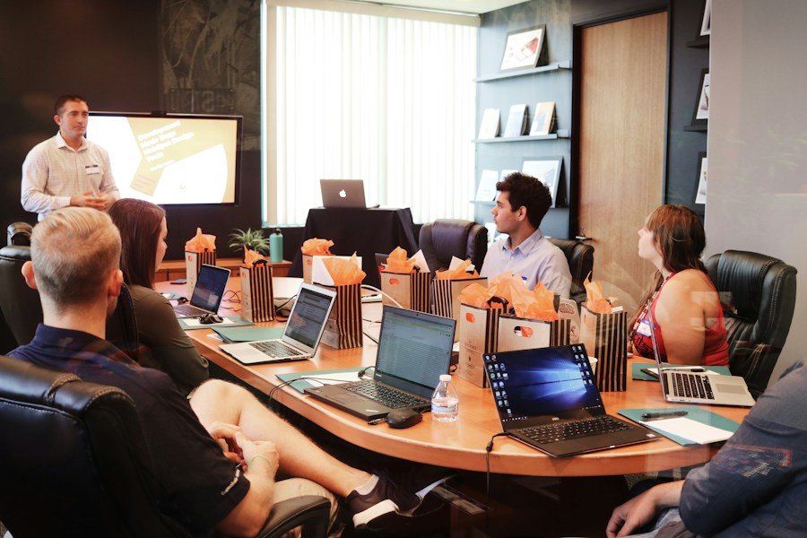

Featured ProgrammeExecutive Leadership Programme
A flagship programme for senior managers and C-suite executives. Covers advanced strategy, organisational design, financial acumen, and stakeholder leadership. Delivered through a blend of residential intensives, peer coaching, and applied projects.
- Advanced strategic planning frameworks
- Cross-functional leadership skills
- Peer network across sectors
- Capstone project with measurable outcomes